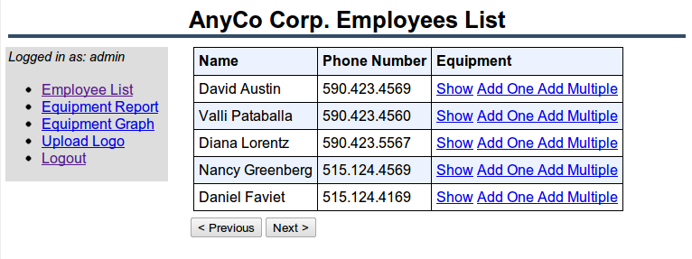

1 Introducing PHP with Oracle Database
PHP is a popular scripting language that can be embedded in HTML, which makes it particularly useful for Web development.
This chapter contains the following topics:
1.1 Purpose
This guide shows you how to create a web application using the PHP scripting language and Oracle Database.
1.2 Overview of the Sample Application
This document guides you through the development of a sample application that manages the tracking of company equipment for a fictitious company called AnyCo Corp. For this introduction to the PHP language and the PHP OCI8 extension that accesses the Oracle database, no PHP framework or abstraction layer is used. However, frameworks are popular and they should be evaluated when building applications. They provide functionality to do tasks the AnyCo application has to manually implement, and they can provide a good application design paradigm.
The AnyCo application uses employee data from the EMPLOYEES table in the sample HR schema provided with Oracle Database. See Oracle Database Sample Schemas for information about this schema. A new table will be created for this application to hold details about the company equipment allocated to each employee.
Figure 1-1 shows the overview of the sample application.
Figure 1-1 Overview of the Sample Application
The application will perform the following functions:
-
Establish a connection to the database using the PHP OCI8 extension. An Oracle connection pool is used to demonstrate how applications can be made scalable.
-
Query the database employee and equipment data.
-
Display and navigate through the data.
-
Show how to insert and fetch records in various ways, including fetching using a PL/SQL
REF CURSOR. -
Show how to tune PHP fetching data from SQL queries.
-
Show how to create and use a web service.
-
Upload and display an image.
-
Show how to monitor the application's use of database resources.
1.3 Resources
The following Oracle Technology Network Web sites provide additional information you may find useful.
-
Oracle Database home page on Oracle Technology Network
http://www.oracle.com/technetwork/database/express-edition/downloads/index.html -
Oracle Database Documentation Library
-
The free book "Underground PHP and Oracle Manual" goes into detail about using PHP with Oracle Database:
http://www.oracle.com/technetwork/topics/php/underground-php-oracle-manual-098250.html -
PHP Developer Center with resources and a PHP forum at
http://www.oracle.com/technetwork/topics/php/whatsnew/index.html -
NetBeans IDE learning trail for PHP development at
-
Oracle Database Documentation Library at
http://www.oracle.com/technetwork/indexes/documentation/index.html -
PHP Scalability and High Availability white paper:
http://www.oracle.com/technetwork/topics/php/whatsnew/php-scalability-ha-twp-128842.pdf -
PHP Web Auditing, Authorization and Monitoring with Oracle Database
http://www.oracle.com/technetwork/articles/dsl/php-web-auditing-171451.html -
PHP Online manual at